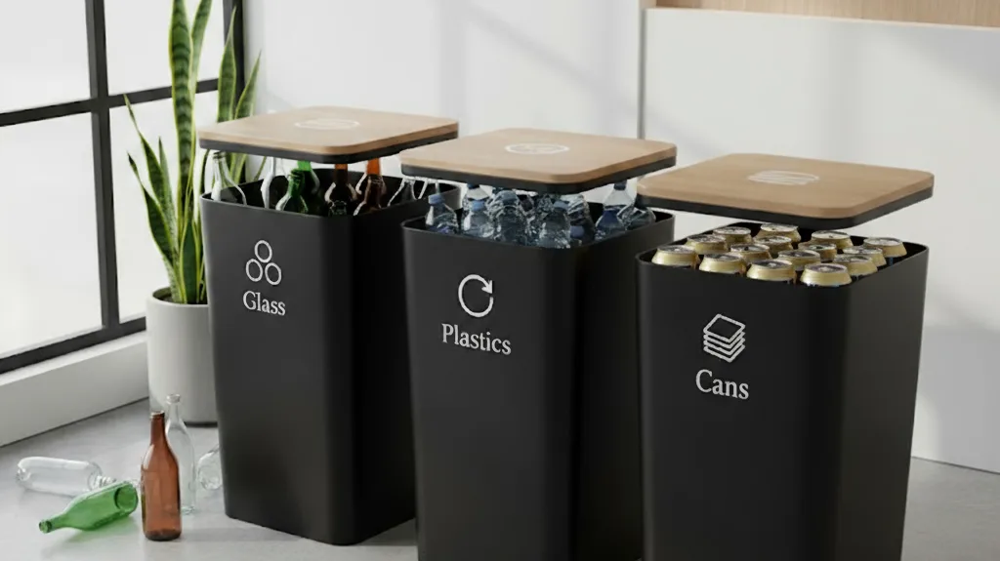

🥫 ビン・缶・ペットボトル回収について

練馬区では、飲食用びん・缶・ペットボトルを専用の回収用コンテナ・袋で資源回収しています。中身は、空にしてから出してください。
⚠️ 回収場所にご注意ください
回収場所は、可燃ごみや不燃ごみの通常の場所ではありません。
毎週土曜日、ゴミ箱の前に置かれているコンテナです。
出し方
1コンテナ・袋の設置
週1回、「飲食用びん・缶・ペットボトル回収の日」の午前6時30分までに、決められた場所に回収用コンテナ・袋（下の写真）を設置します。最初に出す方は、回収用コンテナを組み立ててください。
2午前9時までに直接入れる
午前9時までに回収用コンテナ・袋に直接入れてください。（ビニール袋等は持ち帰ってください）
3色で分けて入れる
飲食用びんは赤色のコンテナ、飲食用缶は緑色のコンテナ、ペットボトルは青い回収袋に、それぞれ入れてください。

※台風や降雪の場合には、回収用コンテナ・袋の設置・回収を中止することがあります。その場合は、次週以降の回収日に出してください。